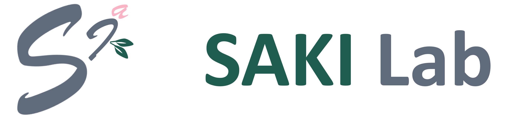
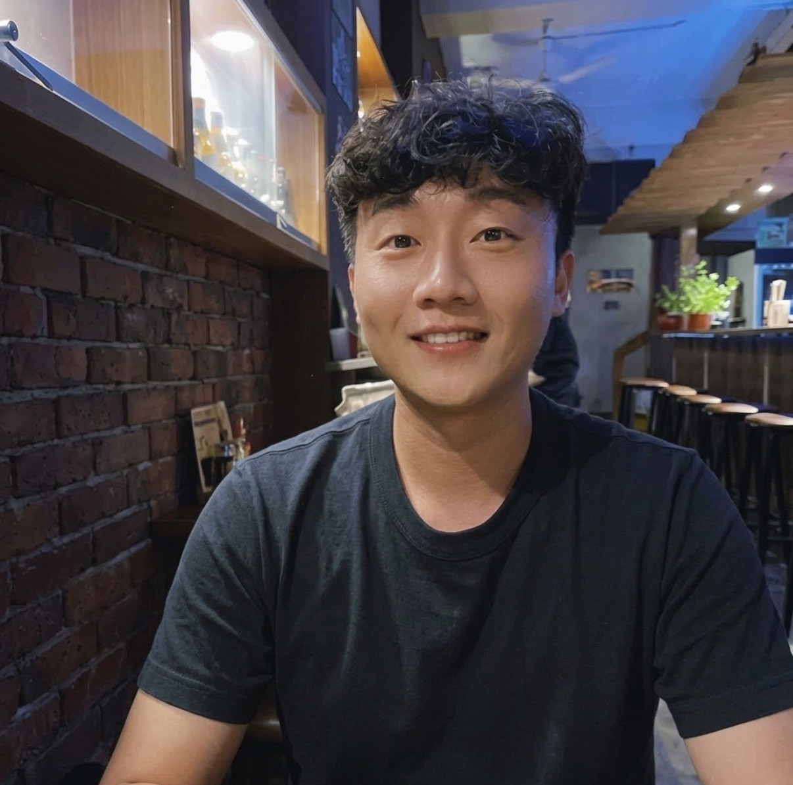

Home
People
Publications
Join Us
People
Lab Director
Fandel Lin
Assistant Professor, NYCU CS
M.S. Students
Huang
Wei-Chih Huang (黃煒智)
Institute of Computer Science and Engineering, NYCU CS
資訊科學與工程研究所
2026 -
Lee
Jay Lee (李哲維)
Institute of Multimedia Engineering, NYCU CS
多媒體工程研究所
2026 -
Alexander Joel Cantrell
EECS International Graduate Program, NYCU CS
電機資訊國際碩士學位學程
2026 -
Joey Peng (彭齡萱)
Degree Program of ECE and CS Colleges, NYCU CS
資訊學院碩士在職專班
2026 -

Django Hsieh (謝富維)
Degree Program of Information and Communication for Technology Crime Investigation, NYCU CS
資訊學院科技犯罪偵查資通訊碩士在職專班
2026 -